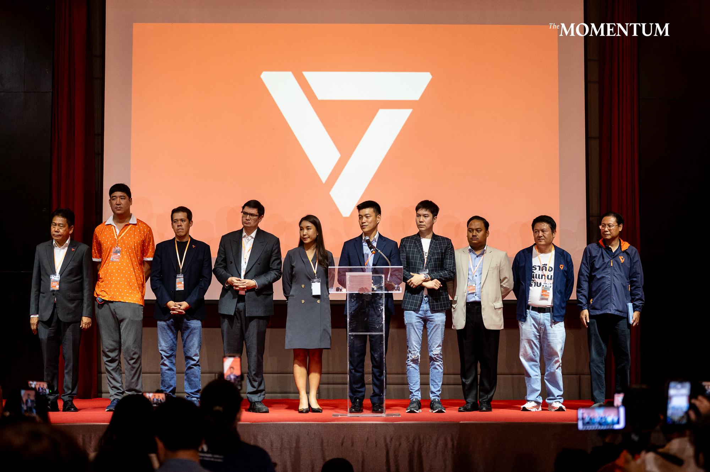

เมื่อวานศาลรัฐธรรมนูญรับคำร้องจาก ปปช. คดี 44 สส. พรรคก้าวไกล (ในอดีต) ที่ยื่นแก้กฎหมาย ปกติทราบว่า หากมีการรับคำร้อง สส. ที่ถูกกล่าวหาจะต้องหยุดปฏิบัติหน้าที่ แต่ดีว่า ศาลมีแจ้งว่า ไม่ต้องหยุด ให้ทำต่อไป ว่างั้น จริงๆเขาก็อาจอยากตัดคอเสียแต่วันนี้ เพียงแต่ เอาวะ ลดกระแสมันหน่อย ปล่อยไปอีกพัก เอาไว้เป็นตัวประกัน อะไรทำนองนี้
เรื่องนี้เป็นเรื่องประหลาดที่สุด (แต่จริงๆก็ไม่แปลกใจอะไร) คือการยื่นแก้กฎหมาย หรือร่างกฎหมายใหม่ มันควรจะเป็นหน้าที่ สส. หน้าที่ สภา แต่ในบางเรื่องกลับถูกมองว่า ผิด สาเหตุก็คงเป็นเพราะขั้วอำนาจเก่า เขาไม่ยอมนั่นเอง อำนาจเก่าเข้าครอบงำหน่วยงานต่างๆไว้ แล้วทำให้ทุกอย่างมันบิดเบี้ยว ไปตามที่ตนต้องการ ผิดหลักเกณฑ์ที่ถูกต้อง ต่อไประบอบแบบนี้น่าจะอยู่ได้ไม่นาน
เอาเท่านี้ก่อน จริงๆมีเรื่องน่ากลัว ที่คิดว่า ไทยน่าจะกำลังเผชิญอยู่ในขณะนี้ คือการเข้าครอบงำรัฐจากภายนอก (state capture) ซึ่งเป็นไปได้สูงว่าไทยเรากำลังโดนอยู่ สาเหตุเพราะเรามีคนชั่วมากเกินไป ในระบบการเมืองการปกครอง พวกนี้มันก็เอาแต่ผลประโยชน์ของมัน จนในที่สุด ชาติก็ล่มสลายไป เฮ้อ ระอาใจกับพวกนี้จริงๆ
#44สส #stateCapture